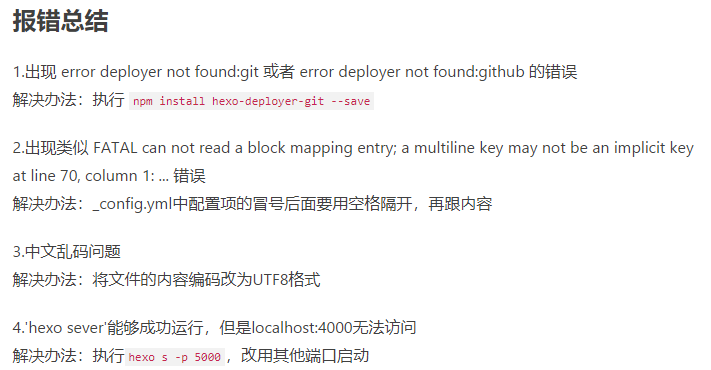

关于在nginx上配置hexo（一）
在Nginx上配置Hexo（一）
因为在git上放blog时对速度不满意，我改将其放在我的学生服务器上（阿里云轻量应用级(●’◡’●)）……具体参考了CSDN上的一篇博客，链接我放在了首篇博文里，在那篇文章中我也提到了我做出了些细节上的改变，也就是我遇到了一些问题，下面给大家分享一下：
1、由于我的nginx是此前就已经配置好了并使用过的……在跟着blog走到最后时才发现访问hostname进不到hexo的初始页面里去，就网上搜了一下hexo配置相关，有了一些理解：
我们创建了三个文件夹，分别在/Documents/myHexo （这个是工程目录），/usr/local/blogRepo （网页配置文件，），/usr/local/hexo（网页文件）。当我登录域名时，总是进入到hexo下的index.html，尽管在hooks里创建了钩子，却感觉完全没有起作用**（如果有朋友知道是什么原因的话，恳请邮件告诉我，我的联系方式在首篇博文里）**。我的解决方法是将nginx配置文件中server{}里root /（后注：关于这一段，我的讲述有一些问题，我在（二）中有进行重新理解，大家可以去看看。）
修改为了/Documents/myHexo下的public目录，然后再进行访问就能看到hexo页面了( •̀ ω •́ )✧。
2、如果在从git上克隆theme的过程中遇到这样的问题：“Please make sure you have the correct access rights and the repository exists.”，我给出这样的参考，博文在这。
3、还有一些易察觉的错误，我参考了这篇博客，一样放上链接。

4、还有一些拓展功能时遇到的问题，对应的网页我已经遗失了（╮（╯＿╰）╭）……但不出意外的话在网上都能搜索到。最后感叹一下，hexo真好用！ψ(｀∇´)ψ
 wechat
wechat alipay
alipay